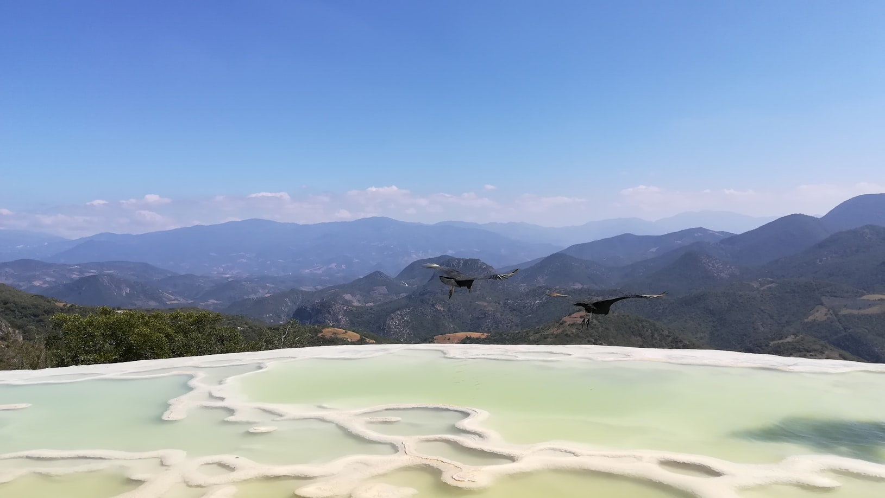
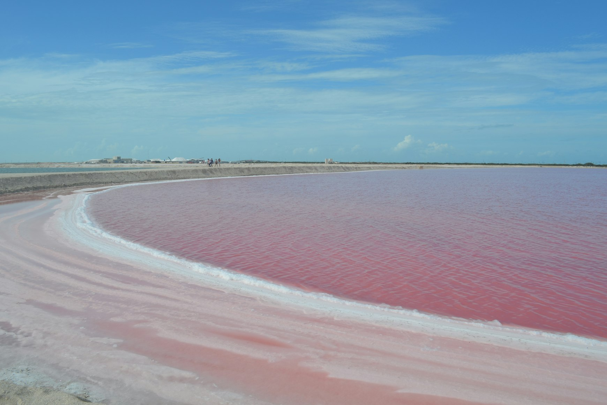
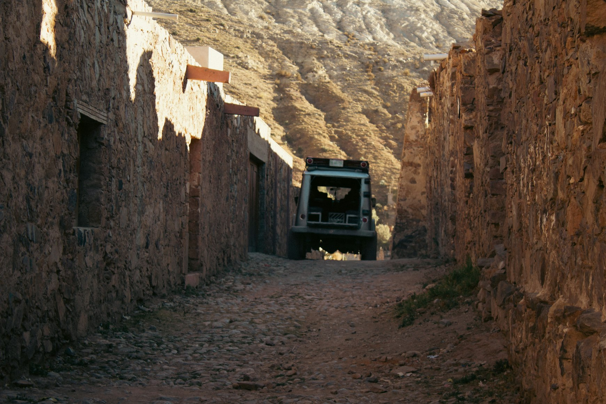

Mexico often gets reduced to colors.
Bright markets. Painted streets. Tropical beaches. Sunlight on colonial walls.
But some parts of the country feel far stranger than the versions most travelers arrive expecting.
There are landscapes in Mexico that seem visually unstable — places where scale, texture, light, and silence combine into something almost hallucinatory. Deserts that resemble unfinished planets. Islands hidden beneath permanent fog. Petrified waterfalls. Rivers so blue they appear digitally altered. Entire towns swallowed slowly by jungle.
And what makes these places linger in memory is not only beauty.
It is the feeling that reality itself becomes slightly unreliable inside them.
Hierve el Agua and the Stone Waterfalls
High in the mountains of Oaxaca, the earth appears to be frozen mid-movement.
Hierve el Agua is often described as a “petrified waterfall,” though the phrase does not fully prepare you for the actual sight. Mineral-rich water has flowed down the cliffs for thousands of years, slowly calcifying into enormous white rock formations that resemble cascading water suddenly turned to stone.

From a distance, the cliffs look impossible.
Like special effects placed against the mountains.
The pools above them reflect the sky in pale turquoise while dry valleys stretch outward into haze and heat below. Wind moves across the cliffs carrying the smell of sunburnt grass and minerals.
There is very little noise here besides air.
And that silence gives the landscape an unnatural clarity.
The place does not feel ancient in the romantic sense.
It feels geological.
As if you are watching the planet shape itself in slow motion.
Las Coloradas and the Unnatural Pink Water
On the northern coast of the Yucatán Peninsula, the water suddenly becomes pink.
Not soft pink.
Not sunset pink.
Artificial-looking pink.

The salt lakes of Las Coloradas often appear edited even in real life — bright rose-colored pools divided by white salt lines beneath an almost aggressively blue sky. The color comes from microorganisms, algae, and salt concentration, though understanding the science does not make the visual effect feel more believable.
The contrast is what makes the landscape so surreal.
Pink water.
White salt.
Empty roads.
Blinding sunlight.
Very few trees. Very little shade. Almost no transition between elements.
Everything feels overexposed.
At midday, the heat becomes physically disorienting. The horizon vibrates. Birds move slowly above the water while the salt flats reflect light hard enough to make the landscape feel partially erased.
There are places that feel dreamlike because they are soft.
Las Coloradas feels dreamlike because it is too sharp.
The Hidden Cenotes of Yucatán
Beneath the forests of the Yucatán Peninsula lies another world entirely.
Thousands of cenotes — natural sinkholes filled with groundwater — remain scattered beneath jungle and limestone across the region. Some are open to sunlight. Others exist almost completely underground, accessible only through narrow openings in the earth.
Inside them, sound changes immediately.
Voices echo differently. Water amplifies small movements. Light enters through cracks in the ceiling in pale vertical beams that make the air itself feel visible.
In places like Cenote Suytun or Sac Actun, the water becomes so still that depth disappears. Stalactites hang from cave ceilings above black reflective surfaces that look less like water than polished stone.
The experience inside many cenotes is strangely psychological.
Not exciting.
Quietly unsettling.
The spaces feel sacred even when crowded.
As if the landscape remembers something older than tourism.
The Island Where Dolls Hang from Trees
South of Mexico City, hidden among the canals of Xochimilco, lies one of the strangest places in the country.
La Isla de las Muñecas — the Island of the Dolls.
For decades, dolls have been hung from trees, buildings, and fences throughout the small island. Sunlight and rain slowly destroyed them. Faces cracked. Eyes disappeared. Limbs detached. Many now hang motionless above the water in advanced stages of decay.
The story behind the island shifts depending on who tells it. Some describe it as a memorial. Others as superstition. Others simply as obsession.
But the atmosphere matters more than the explanation.
Especially late in the afternoon, when the canals become quieter and the movement of water beneath the boats is the loudest sound around.
The island feels less like a tourist attraction than like an abandoned dream someone forgot to wake up from.
Copper Canyon and the Scale of Silence
In northern Mexico, the Barrancas del Cobre — Copper Canyon — stretches across enormous sections of the Sierra Tarahumara.
The canyon system is larger and deeper than many travelers expect. Villages appear isolated against cliffs. Roads disappear into mountain fog. The scale becomes difficult to emotionally process from the edge of the ravines.
At sunrise, layers of canyon walls fade into blue-gray distance while cold air moves upward through pine forests. Trains crossing the region look impossibly small against the terrain.
There are moments here when Mexico stops feeling culturally familiar and begins feeling geographically enormous.
Not tropical.
Not colonial.
Something wilder.
The silence inside the canyon carries differently than in deserts or forests.
Heavier somehow.
The Desert Where Time Feels Distorted
In San Luis Potosí, near the abandoned mining town of Real de Catorce, the desert begins behaving strangely.
Roads disappear into dust and mountains. Old churches emerge from dry plains. Cacti grow beside ruined stone structures left behind by another century.

Fog occasionally moves across the desert plateau in ways that flatten distance entirely. Horses appear through the mist and disappear again seconds later.
At night, the sky over the desert becomes almost unnaturally clear.
Real de Catorce itself feels suspended between realities — part ghost town, part pilgrimage site, part fading memory of northern Mexico before modern highways rerouted life elsewhere.
Places like this create a specific emotional sensation:
The feeling that time is no longer moving at a normal speed.
Mexico Beyond Its Own Image
Part of what makes these places feel surreal is how different they are from the version of Mexico most people imagine before arriving.
The country is often simplified into beaches, food, music, nightlife, color.
But Mexico contains enormous emotional and geographical contrasts. Volcanic landscapes. Silent deserts. Underground rivers. Fog-covered mountains. Jungle ruins slowly disappearing back into vegetation.
Entire regions still feel strangely outside the polished global image of tourism.
And perhaps that is why the surrealism feels so convincing here.
Not manufactured.
Not curated.
Just existing naturally inside landscapes that were never designed to feel familiar in the first place.